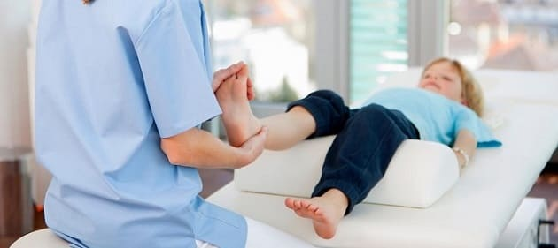

Хромота довольно часто встречается у малышей и дошкольников. Бывает, что причина очевидна, например, недавнее падение. Но иногда случается так, что однажды утром ребенок непонятно почему начинает хромать и родители, понятное дело, беспокоятся. Он может даже совсем отказываться ходить и вести себя так, будто что-то болит в ноге. Вот как вы можете разгадать тайну хромающего ребенка.
ПРИЧИНЫ
Вот некоторые безобидные причины хромоты у малыша:
Недавнее падение. Возможно, вчера он споткнулся, упал и растянул мышцы или вывихнул лодыжку, но это было так несерьезно, что вы не заметили, а он не жаловался.
Новый напряженный вид деятельности. Если он активно играл на спортивной площадке, начал играть в новую игру в спортивном зале или прыгал на батуте в последние дни, он мог что-то растянуть.
Заноза или другое инородное тело. Очень внимательно осмотрите и прощупайте ступню ребенка. Даже крошечная заноза или осколок стекла могут вызвать прихрамывание.
Новая или старая обувь. Новая пара обуви может вызвать потертость или образование волдыря — водянки. Старая пара может быть слишком маленькой. Это может послужить причиной хромоты, даже когда ребенок не носит эту обувь.
Если вы не замечаете никаких более серьезных признаков или проблем, перечисленных ниже, можете спокойно подождать около 5 дней перед тем, как обратиться к врачу. Практически всегда это безобидное прихрамывание проходит само по себе (возможно, вам придется вытащить одну-две занозы). Конечно, не помешает сходить на консультацию к врачу и раньше, просто чтобы убедиться в отсутствии проблем. |
Спал в неудобной позе. Некоторые дети могут прихрамывать в течение нескольких часов после того, как проснутся, из-за того, что спали в неудобной или необычной позе. Это может произойти и после длительной поездки в автокресле.
КОГДА БЕСПОКОИТЬСЯ
Существуют некоторые более серьезные причины хромоты, при которых нельзя медлить. Вот признаки, обнаружение которых требует обращения к врачу:
Известная травма, полученная ранее. Если недавно ваш ребенок упал с высоты, ему наступили на ногу или ударили чем-то достаточно травматичным, что, по вашему мнению, могло вызвать перелом, обратитесь к врачу в тот же день или на следующий.

Врач может внимательно осмотреть ногу, ища причины боли. Может потребоваться рентгеновский снимок, если в определенном месте есть резкая болезненность, отек или врач подозревает травму. При подозрении на инфекцию костей или суставов могут быть сделаны анализы крови.
Здоровье ребенка от докторов Сирс / Сирс У. и др.